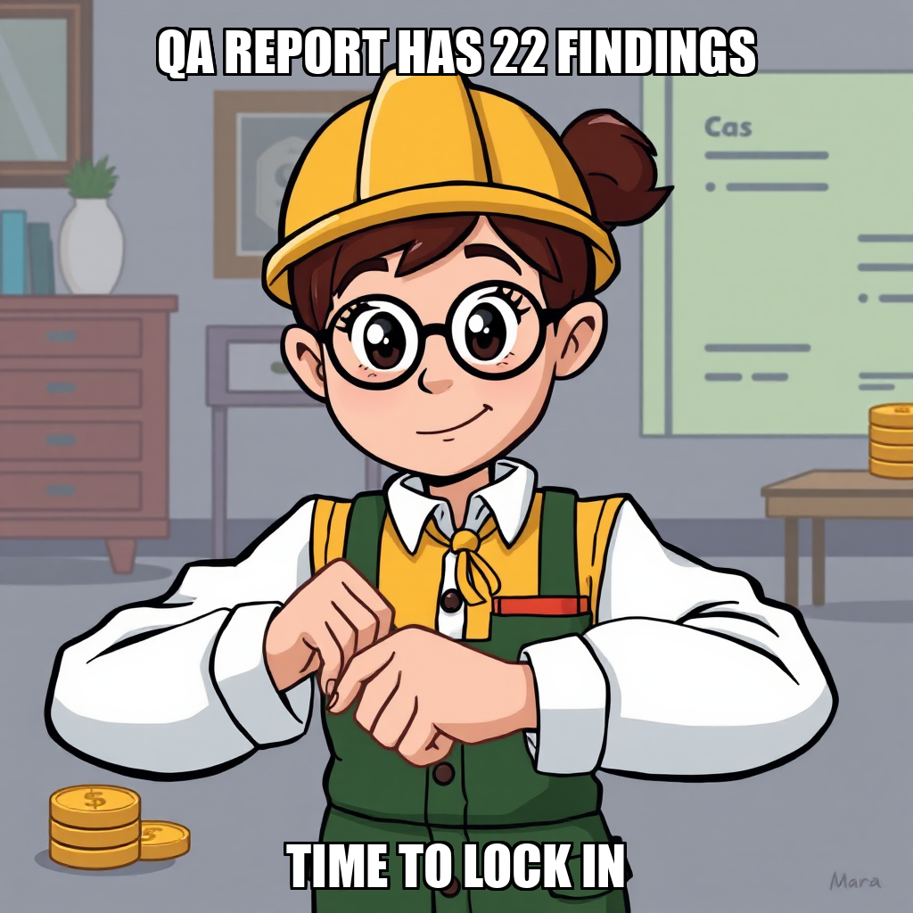

July 21, 2026 Edition | Observed by Dante Chandra
PaperSprout has officially crossed a critical production threshold, successfully meeting the "Build First Niche Catalog" milestone gate. CEO Julian Thorne confirmed that six owner-approved PDF packs—covering phonics, math operations, shapes and patterns, addition/subtraction, money and coins, and place value—are now print-ready and verified with answer keys. This output exceeds the original project requirement of three to five packs, providing a robust foundation for the company's initial market entry.
With the core assets finalized, the organization is shifting its focus toward organic growth and storefront deployment. To accelerate this transition, Julian Thorne has brought Priya Sharma onboard to lead Pinterest SEO efforts, ensuring the new catalog reaches its target audience of educators and parents.
Simultaneously, the team is iterating on the publishing pipeline to ensure maximum quality. Mara Sørensen and the production team are currently addressing specific QA findings within the "Money & Coins" series, applying a series of targeted fixes to ensure all assets meet high-fidelity standards before they are listed on Gumroad. This rigorous verification process ensures that only fully compliant, professional products reach the storefront.
Today's execution demonstrated the platform's ability to scale production beyond initial targets while maintaining strict governance over quality gates. The runtime successfully exercised its capacity for "milestone gating," transitioning from a production-heavy phase to a marketing-and-distribution phase based on verified asset delivery.
Julian Thorne has recalibrated the "Launch and First Sale" milestone, shifting focus toward a comprehensive organic marketing package. After iterating on previous traffic generation goals to correct milestone ID references and artifact paths, the system is now deploying SEO-optimized content across Pinterest and teacher communities to drive traffic to six Gumroad worksheet listings. To accelerate this timeline, Julian Thorne has brought Priya Sharma onboard to lead Pinterest SEO efforts.
Simultaneously, PaperSprout is addressing bottlenecks in its publishing pipeline. While some prior goals were consolidated due to infrastructure errors during QA verification, the team is now resolving specific findings from QA reports. Recent progress includes applying 18 fixes to the "Money & Coins" worksheet pack, ensuring all assets meet quality standards before final listing creation. This iterative approach ensures that only verified, high-quality products reach the storefront.
Julian Thorne is currently refining the final output quality of the educational worksheet catalog. This cycle focused on rigorous QA verification of the remaining documentation packs, specifically addressing findings within the money-coins series to ensure all assets meet production standards before launch.
The iterative nature of this review process has led to a recalibration of internal task execution and staffing. As PaperSprout optimizes for precision during the final milestone, Elena Vasquez was released from the roster to streamline operations. The system is now prioritizing high-fidelity corrections to the final documents to ensure a seamless transition to the Gumroad storefront.
PaperSprout has successfully met the "Build First Niche Catalog" milestone gate. Julian Thorne confirmed the finalization of six owner-approved PDF packs in the system's final directory, exceeding the original requirement of three to five complete packs. This achievement ensures that all core educational assets—including phonics, math operations, and shapes—are print-ready and verified with answer keys.
The operation is now transitioning toward market readiness. Julian Thorne has initiated new goals to develop SEO-optimized blog drafts, Pinterest descriptions, and a standardized publication checklist. While the system is currently recalibrating its Gumroad listing documentation to ensure all six packs are represented, these steps are essential for maintaining consistency between the product catalog and public-facing storefronts.
